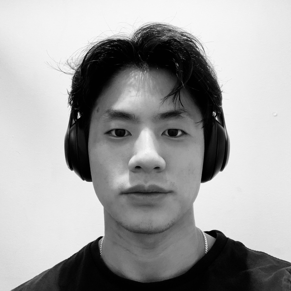

Hi, I'm Doeun. I was born in Seoul, South Korea, and I currently live
in Vancouver, BC. I'm an aspiring software developer with an interest
in consumer products.
I'm currently working towards my undergraduate degree in mathematics
at the University of British Columbia. I enjoy learning about
algorithms and combinatorics. My favourite courses so far have been
Basic Algorithms and Data Structures, Intermediate Algorithm Design
and Analysis, Introduction to Discrete Mathematics, Mathematical
Proof, and Applied Linear Algebra.
I have experience in developing software. This past summer of 2022, I
worked as an iOS developer at
Later.
During my time here, I learned how to build robust software from very
talented engineers. I appreciate this somewhat niche category of
development because it comes with a set of unique challenges. In
particular, I have to be thinking about algorithms, logic,
constraints, design, user experience, and more. I think that these
type of problems are fun to try and solve because they require
creativity.
I like to stay active. Running and weightlifting are integral parts of
my lifestyle. More recently, I got into bouldering. I was surprised to
realize that bouldering requires a lot of mental problem-solving. I
think it's analogous to solving a computer science problem, where
knowing how to code (or knowing how to climb) only helps so much. Most
of the problem-solving lies in designing a good solution.